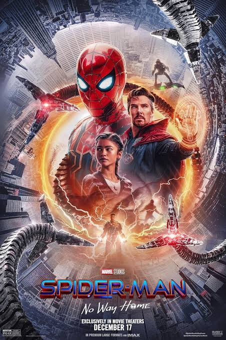
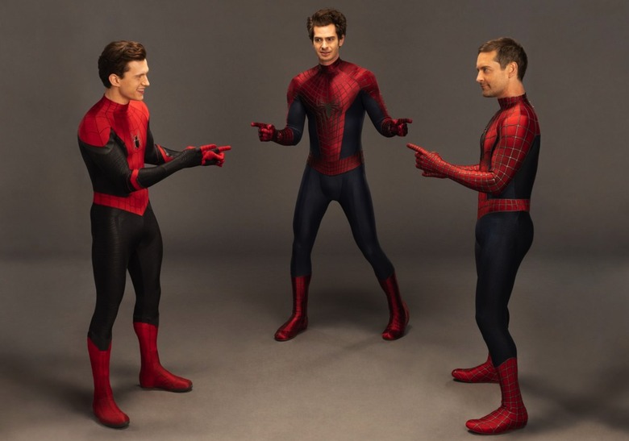
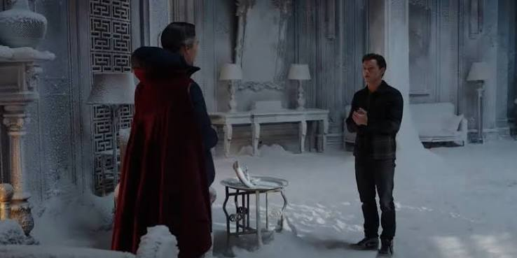

Spider-Man : No Way Home (2021)

| Titre original | Spider-Man: No Way Home |
|---|---|
| Année | 2021 |
| Genre | Action, Aventure, Fantastique |
| Durée | 148 minutes (version longue : 157 minutes) |
| Réalisateur | Jon Watts |
| Acteur principal | Tom Holland |
| Scénaristes | Chris McKenna, Erik Sommers |
L'histoire
Dans Spider-Man: No Way Home, l’identité de Peter Parker est révélée au monde entier, ce qui rend sa vie très compliquée. Il demande alors de l’aide au Docteur Strange pour que tout le monde oublie qu’il est Spider-Man.
Mais le sort ne se passe pas comme prévu et ouvre la porte à des ennemis venus d’autres univers. Peter doit alors les affronter tout en essayant de protéger ses proches.
Au fil de l’histoire, il comprend que ses choix ont des conséquences et qu’il doit apprendre à prendre ses responsabilités.
Les moments importants
- L’identité de Peter est révélée : tout le monde découvre que Peter Parker est Spider-Man, ce qui bouleverse sa vie et celle de ses proches.
- Le sort du Docteur Strange : Peter demande à Strange de faire oublier son identité au monde entier, mais le sort tourne mal et fait apparaître des ennemis d’autres univers.
- L’arrivée des méchants : le Bouffon Vert, Docteur Octopus, Electro et d’autres ennemis apparaissent dans son univers.
- La mort de tante May : le Bouffon Vert provoque une tragédie qui bouleverse Peter et lui rappelle les responsabilités liées à ses pouvoirs.
- L’arrivée des deux autres Spider-Man : Peter rencontre les Spider-Man interprétés par Tobey Maguire et Andrew Garfield, qui viennent l’aider.
- Le combat final : les trois Spider-Man unissent leurs forces pour affronter les ennemis et tenter de les sauver.
- Le sacrifice de Peter : pour réparer les dégâts causés par le sort, Peter accepte que tout le monde oublie son existence, y compris ses proches.
- La fin du film : Peter se retrouve seul, mais il décide de continuer à être Spider-Man et de recommencer sa vie.
Les personnages
Peter Parker
C’est le personnage principal du film. Après la révélation de son identité, il essaie de protéger ses proches et d’assumer les conséquences de ses choix.
Doctor Strange
C’est un puissant sorcier qui accepte d’aider Peter à faire oublier son identité au monde entier, mais le sort provoque des problèmes inattendus.
Bouffon Vert
C’est l’un des ennemis les plus dangereux du film. Il manipule Peter et provoque un événement tragique.
Images du film

